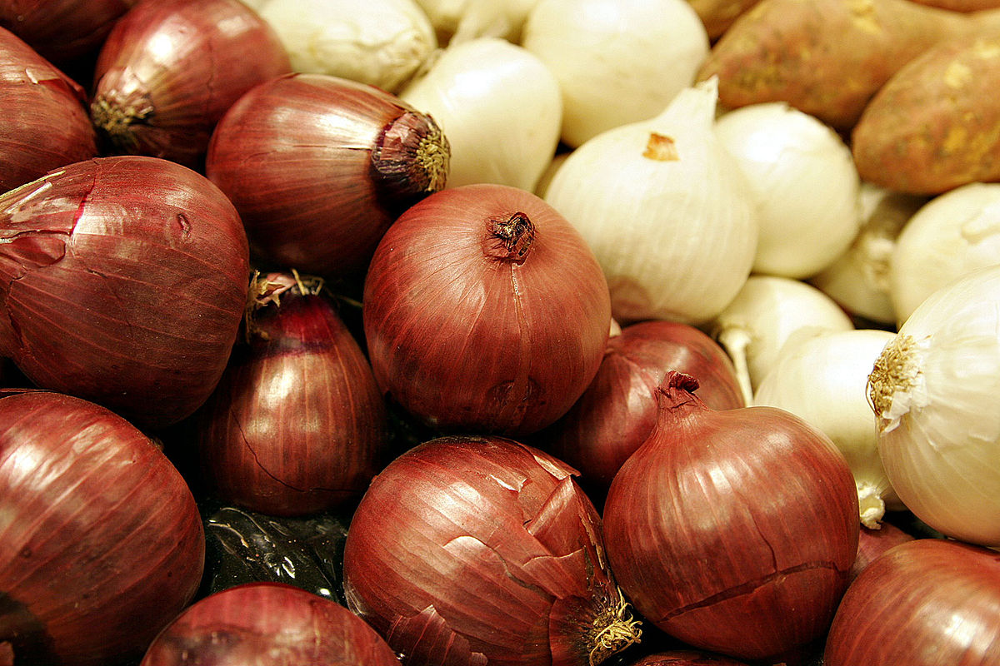
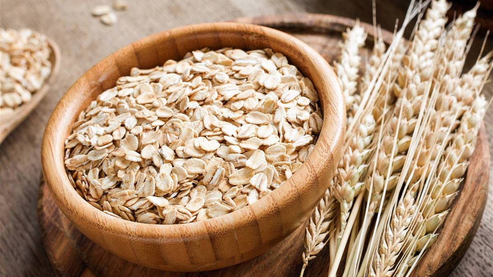

Cebolla | Qué Variedad Utilizar en las Recetas
Kiko Palomares, Dec 1, 2022

Una variedad de cebolla para cada ocasión Para cada plato hay un tipo particular de cebolla que puede
realzar los sabores, vamos a ver como se elige la correcta, para todas las recetas. Protagonistas de
la
cocina italiana e internacional, las cebollas desempeñan un papel fundamental…
Leer más
Copos de Avena | Valores Nutricionales, Calorías y Propiedades
Kiko Palomares, Sep 5, 2022

Copos de avena: valores nutricionales, calorías y propiedades Los copos de avena son un derivado
natural
de los granos de avena: veamos sus valores nutricionales, propiedades beneficiosas y usos más
comunes.
Los copos de avena son un producto alimenticio obtenido por la presión mecánica de los…
Leer más
Ver más entradas